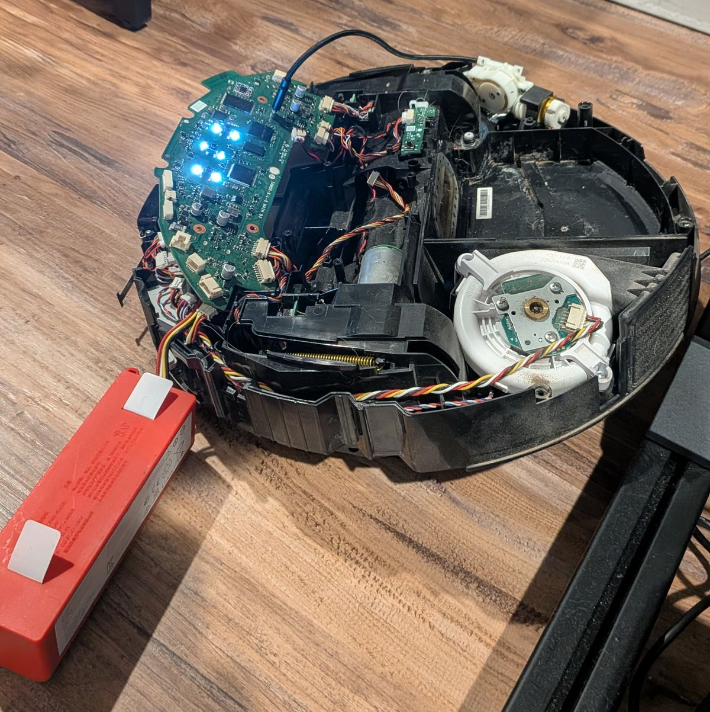

Why bother
Out of the box, a Q7 Max is a Roborock cloud device. You need their app, and an account tied to your email or phone number. The app talks to the robot through Roborock's servers, and the map it builds of your house goes up to them too. Firmware updates come when Roborock decides, with whatever they changed.
Valetudo cuts all of that. There's no account. The robot serves its own web page on your network, so any browser works, and commands never leave the house, so they're quick. The map stays on the robot. It keeps working when Roborock's servers are down, and it'll keep working the day Roborock stops supporting the Q7 Max, which is how a lot of smart home gear ends up in a drawer.
Then there's Home Assistant. Cloud vacuums tend to show up there with a start button and not much else. Mine shows up with the lot: fan and water level, all seven rooms from its map, every brush and filter with a reset button, carpet mode, and the map itself.
What you give up, from Valetudo's own Why not Valetudo? page: it's permanent, with no going back to stock. It isn't Roborock's app minus the cloud, so some features never arrive; multi-floor maps are the usual one. Security updates and reaching it from outside the house become your job. And that page asks people not to try to talk anyone into it. Fair enough. This is just why I did.
Read this first
The real instructions are the Valetudo docs, and they're what you should follow. The project's author asks people not to make content out of Valetudo, so this isn't meant to replace them. It's what the docs didn't tell me about this particular robot.
-
It has to be a Q7 Max or Q7 Max+, model
roborock.vacuum.a38. The plain Q7 is a different robot and isn't on the supported list. - Rooting means taking the robot apart down to the underside of the mainboard. Every warranty seal goes. There's no soldering.
- Q7 Maxes built from around Q2 2024 switched to a flash chip Valetudo's developers haven't managed to root. You find out once it's in pieces. Details on Valetudo's supported robots page.
- It can brick. Take the backups in step 4 before you do anything else on the robot.
What you need
- The robot, fully charged. All of this runs on battery.
- A computer with Linux and sunxi-tools 1.3 or newer. The docs want Linux on the metal; I got by with Windows and WSL (step 3).
- A micro USB cable, a jumper wire or paperclip, and screwdrivers.
- Your phone, to photograph every step of the teardown, and somewhere to keep a lot of screws in order.
adbfrom Android's platform tools, in case yours comes up the way mine did.
1Build the firmware
Go to Dustbuilder's Q7 Max page and
request a build with Create FEL image (for initial rooting via USB) ticked. You get two
files: a _fel.zip that boots the robot over USB, and a _fw.tar.gz with
the rooted firmware. Your SSH key is baked into the build.
Keep the whole download somewhere safe, key included. Mine sits in Google Drive, and it's why re-rooting never meant starting over.
Also grab valetudo-armv7-lowmem.upx from
Valetudo's releases. That's the
build for this robot.
2Open it up
Take apart only what you need to reach the underside of the mainboard. Every part you remove is one more you can put back wrong. The docs say you can usually get away with unplugging just the connectors at the front and tilting the board up. Photograph each step and keep the screws in order. The docs say to budget one to two hours.

3Boot it over USB
- Plug the micro USB into the board and your computer. Connect the battery. Leave the robot off.
- Short test point TPA17 to ground. SH1 is close enough to reach with one hand. If TPA17 has a coating on it, scrape it off with a fingernail.
- Press power for 3 seconds, and keep TPA17 grounded for 5 seconds after you let go.
-
lsusbshould show1f3a:efe8, "sunxi SoC OTG connector in FEL/flashing mode". If not, power off and try again. It takes a steady hand. - Unzip the
_fel.zipand run itsrun.shas root.
On Windows, the zip includes sunxi-fel.exe and run.bat. I didn't use
them. I passed the USB device through to WSL with usbipd (bind it from an admin
prompt, then attach it) and ran the Linux one.
Here's where mine didn't match the docs. They say the robot reboots and puts up a Wi-Fi
hotspot. Mine came back on USB as an Android debug device instead: 1f3a:1001,
"Rockrobo ruby". It takes more than ten seconds to show up, so if you check straight away it
looks like it failed. adb devices lists it and adb shell is a root
shell, no password.
Windows' adb.exe can't read WSL paths like /mnt/c/.... Give
adb push the C:\Users\... form.
4Back up, then flash twice
First, on the robot, back up two partitions. They hold calibration and identity data unique to your robot, and nothing can recreate them.
dd if=/dev/nandb | gzip > /tmp/nandb.img.gz
dd if=/dev/nandk | gzip > /tmp/nandk.img.gz
Pull both off the robot and keep them with the Dustbuilder files. To copy files either way, use
adb push/adb pull, or scp -O over the hotspot. The robot
has no SFTP server, so plain scp from a recent OpenSSH fails.
Next, make room. Mine had 102 MB of old cleaning logs in /mnt/data/rockrobo/rrlog,
which left 27.7 MB free for a 26.7 MB firmware.
rm -rf /mnt/data/rockrobo/rrlog/*Through adb shell that * didn't expand for me. Deleting each directory by name worked.
Copy the _fw.tar.gz into /mnt/data/, then:
cd /mnt/data
tar xvzf roborock.vacuum.a38_*_fw.tar.gz
./install.sh
rebootWhen it's back, run the installer a second time:
cd /mnt/data
./install.sh
reboot
The docs say to run it twice, and it's worth knowing why. The robot has two firmware slots, A
and B. install.sh writes the one you aren't running and flips the boot flag over to
it. One pass leaves the other slot stock, and the next time the robot switches slots you're back
on stock firmware without any warning.
5Install Valetudo
Copy the binary to /mnt/data/valetudo. That path is the file itself, not a folder.
Then, on the robot, clear out the installer and set Valetudo to start on boot:
cd /mnt/data
rm roborock.vacuum.*.gz boot.img firmware.md5sum rootfs.img install.sh
cp /root/_root.sh.tpl /mnt/reserve/_root.sh
chmod +x /mnt/reserve/_root.sh /mnt/data/valetudo
reboot
When it comes back, join its hotspot, give it a minute, and open http://192.168.8.1.
Valetudo walks you through putting the robot on your own Wi-Fi. After that it's at whatever
address your router gives it.
/mnt/reserve/_root.sh is the robot's boot hook, and it matters later. Its main block
only runs when /mnt/data/valetudo exists, and that same block is what cuts the
robot off from Roborock's cloud.
6Home Assistant
Valetudo talks MQTT, and Home Assistant finds it through MQTT discovery. On Home Assistant OS, install the Mosquitto broker add-on. In Valetudo, open Connectivity → MQTT Connectivity, point it at the broker and turn on the Home Assistant integration. The vacuum shows up as a device on its own; there's no "new device found" prompt. The docs cover the map card.
Two things that cost me time:
- The Mosquitto add-on logs in with Home Assistant user accounts, and it answers "not authorized" for everything. A wrong password and a user that doesn't exist look the same.
- Give both the robot and Home Assistant fixed addresses. When my Home Assistant box moved to a new IP, Valetudo kept trying the old one and the vacuum sat unavailable in HA for two days.
When it factory-resets
Mine has done it twice, both times my fault (next section). What I learned:
-
A reset wipes
/mnt/data: Valetudo, its settings and the Wi-Fi config. The robot comes back up as a hotspot at192.168.8.1. -
The root survives. So does
/mnt/reserve, where_root.shlives, along with any backups you keep next to it. - So you don't have to open it up again. I still had USB connected, and it was a few minutes over ADB: put the Valetudo binary back, write the Wi-Fi config by hand, reboot. It came back on the same address with the cloud still cut off. Over the hotspot with SSH it should be the same job, but I haven't done it that way.
If you re-root a robot that already knows your Wi-Fi, put the Valetudo binary back before it
boots normally. Without it, _root.sh skips the part that cuts the cloud, the robot
phones home to Roborock, and that's the boot where a forced firmware update can land.
GLaDOS, and the line that reset it twice
Valetudo can upload custom voice packs, but not on this robot. Q7 Max packs are encrypted with a
key inside the firmware, not the ccrypt password every voice-pack guide uses, so a
homemade pack fails with error code 3 however you build it.
With root you can skip the pack format entirely. Put your .ogg files in a folder
under /mnt/data and mount it over the stock sounds at boot, from inside the
if block in _root.sh. I used
0bserver's
lines from the Home Assistant forum:
while [[ ! -f /mnt/resources/audio_default/power_on.ogg ]]; do
sleep 1
done
sleep 1
umount /dev/nandi
sleep 1
mount /mnt/data/custom_sounds/audio_default /mnt/resources/audio_defaultThe files have to be Ogg Vorbis, 16 kHz mono, with the stock filenames. Your folder replaces the whole stock one, so it needs every file: copy the stock set off the robot first and swap in only the lines you've redone.
The mistake was Oucher, which plays a
sound when the robot bumps into something. I launched it from _root.sh with a plain
& on the end, and the next boot factory-reset the robot. The second time, I added
lines back one at a time, and that was the one. I'm fairly sure it caused the first reset
too. Oucher ships its own
init script that daemonises properly, and started that way it survives reboots:
if [[ -f /mnt/data/oucher/S12oucher ]]; then
/mnt/data/oucher/S12oucher start
fi
So: never start anything long-running from _root.sh with a bare &.
The file itself warns that a bad script can brick the robot, and this model has no recovery
partition to fall back on.